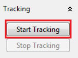
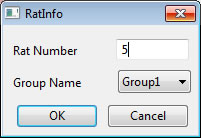
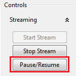
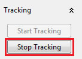

Managing Track Session
Definition
Managing a track session includes Starting, Pausing and Ending.
Starting track session
Steps for starting track session:
Prerequisits:
- An Experiment needs to be created/loaded.
- A Video session needs to be started (Video file or Webcam)
- Click button: Start Tracking

- Enter rat number for the track session

Pausing track session
When Track session is paused, all processes and calculations are halted till tracking is resumed or ended later.
Tracking session is paused/resumed whenever Straming is paused/resumed, using the Pause/Resume button on the Streaming panel:

Ending track session
When tracking session ends, all data is saved automatically to the experiment file.
Tracking session can be stopped, using the Stop Tracking button in the following snapshot:
